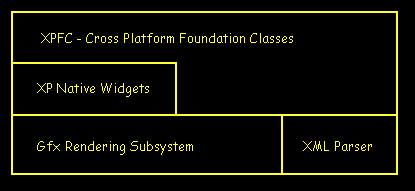
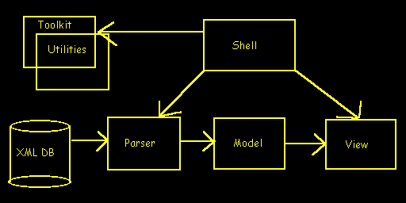
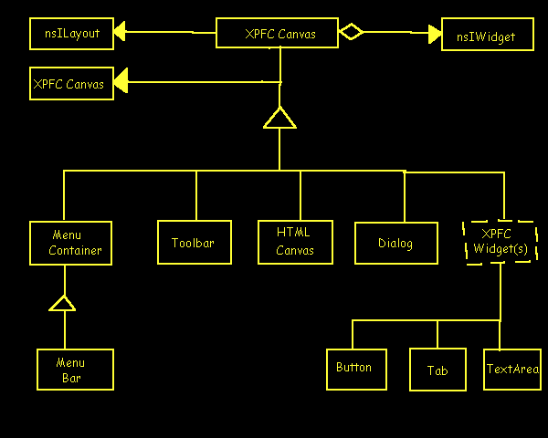

|
|
XPFC - Cross Platform Foundation Classes
Gregory Scallan
Initial Draft: August 30, 1998
Last Modification: August 30, 1998
Contents
Overview
The Cross Platform Foundation Classes (XPFC) are a set of interfaces
and underlying implementations for supporting applications in a platform-independent
manner with code reuse and modularity at the heart of its design.
Information on how resources are defined is
here.
Design
The design of XPFC encompasses the following major features:
-
Platform Independence - currently running on Win95/98/NT, IRIX & Linux.
-
XML based user interface layout design
-
XML based user interface widgets (dialogs, toolbars, menubars, buttons,
custom ui, etc...)
-
Platform-independent Javascript & RDF based localizeable resources
-
Full UI definitions available via the internet
-
MC support of all UI elements
-
Application level downloadable widgets (ie toolbars, menubars, etc...)
-
Command based widget communication, which supports multiple levels of Undo
throughout the UI
-
Plugginable Layout Managers
-
Embeddable component support (currently embeds HTML via raptor, and trex
calendar)
-
Builtin TCP/IP protocol for remotely controlling dynamic UI content
Dependencies
XPFC has 'core' dependencies on the following modules:
-
XPCOM
-
NSPR 2.0
-
Base
-
Gfx
-
Widget
-
XML Parser
In addition, additionally functionality can be dynamically loaded with
dependencies on the following modules:
-
webshell (aka raptor)
-
netlib
-
libpref
-
javascript
Architecture
The following diagram depicts the general relationship of core
XPFC with other modules:

Figure 1: XPFC Module Relationship
Within XPFC, there are several subsystems which play a major role. Their
relationship is depicted in the following diagram:

Figure 2: XPFC Subsystems
View Subsystem
This system is comprised of all the visual runtime elements.
All visual elements are instances of the core Canvas class. This
class, which aggregates the nsIWidget interface, is the lowest level base
class that all system can expect to QueryInterface.
Supporting Containers include Dialogs, Toolbars and Menubars. Supporting
widgets include those typically found in application toolbars and dialogs,
such as buttons and textfield. The widgets and containers aggregate the
Canvas implementation. Thus, ALL UI elements in the View Subsystem
Support the nsIWidget AND nsIXPFCCanvas interfaces.

Layout Subsystem
This system is comprised objects that know how to lay out Canvas's.
Currently, X/Y Box layout is the only implementation. Table layout
is possible, and width modifications to the Parser Subsystem, the raptor
Layout engine could be used here.
Parser Subsystem
This system is comprised of both the XML DTD for XPFC and the
ContentSink for the View Subsystem. The raptor xml parser is used
for the majority of this system.
Shell Subsystem
This system is is the entry point for your main application,
written as XP code. It offers the toplevel event loop, as well as application
level services.
Model Subsystem
This system offers access to predefined runtime definitions
of tokenized XML. Multiple UI definitions and parts can be loaded into
memory and be referenced by the View subsystem for display.
Miscellaneous
There are a variety of supporting classes in XPFC:
-
ObserverManager: For supporting Subjetc/Observer interfaces
-
CanvasManager: For managing the relationships between canvas'
-
Command System: For supporting arbitrary command passing between
objects for multiple levels of Undo
-
Toolkit: The global object accessor
-
Utility: For stacks, vectors and iterators
Change History
| Who |
When |
What |
| spider |
8/30/98 |
Initial Document |
|